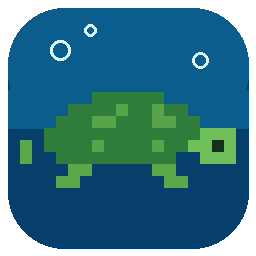
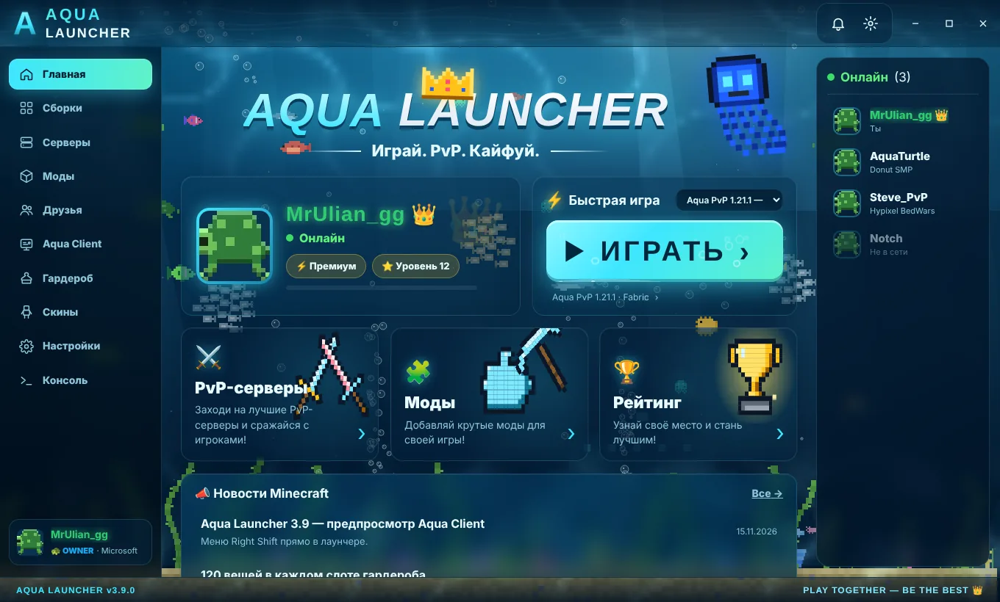
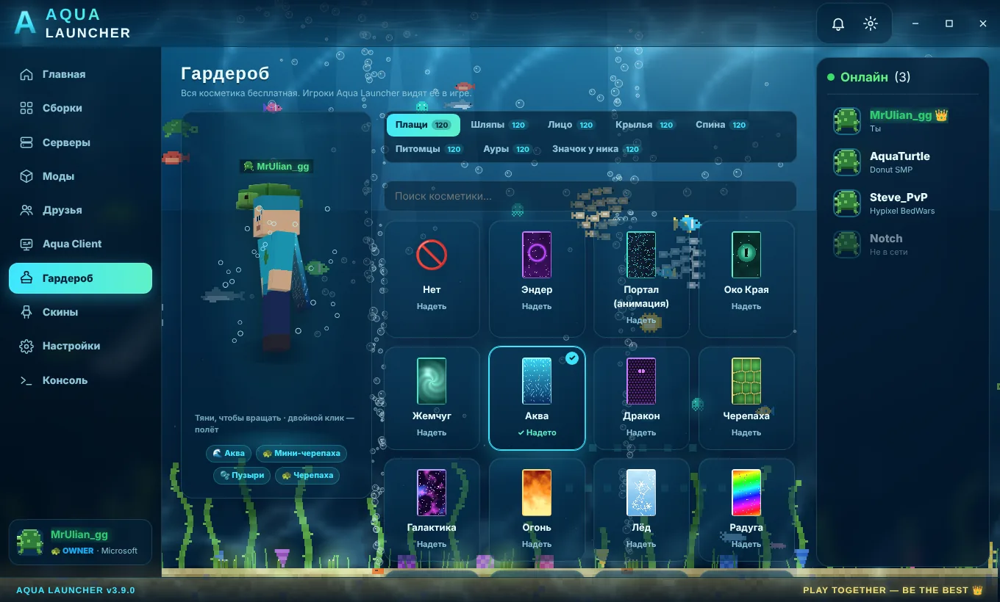
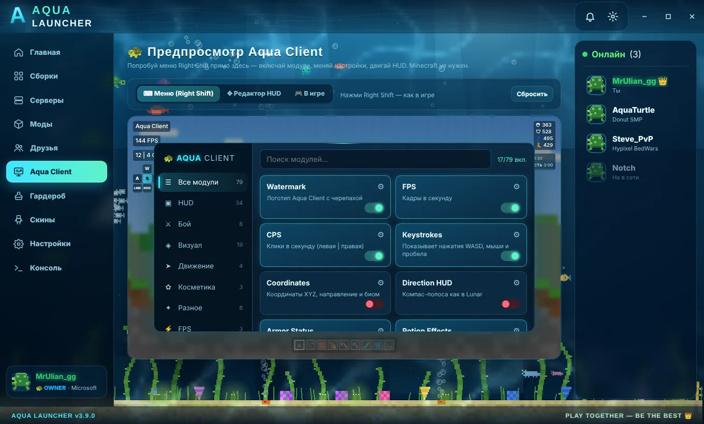
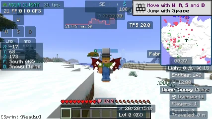
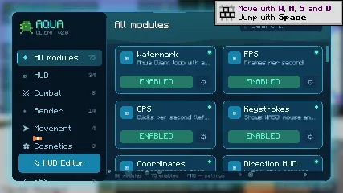
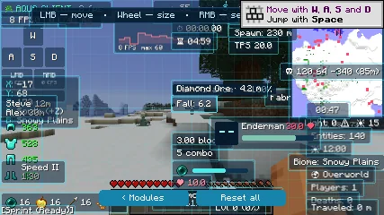

⌨️
Меню на Right Shift
80 модулей: HUD, Keystrokes, CPS, Zoom, Freelook, мини-карта, таймер TNT, вейпоинты и многое другое.

AQUA LAUNCHERИграй. PvP. Кайфуй.
Лаунчер Minecraft со встроенным Aqua Client: 80 модулей, меню на Right Shift, настоящий FPS-буст, 960 вещей косметики и обновления, которые ставятся сами — как в Lunar.
Бесплатно · Windows 10/11 · Minecraft 1.20 – 1.21.11

Один лаунчер — и сборки, и моды, и клиент для PvP.
80 модулей: HUD, Keystrokes, CPS, Zoom, Freelook, мини-карта, таймер TNT, вейпоинты и многое другое.
Оптимизация графики, частиц и дальности, Unfocused FPS и RAM Cleaner — больше кадров на любом ПК.
Плащи, крылья, шляпы, питомцы, ауры и значки у ника — 120 в каждом слоте. Бесплатно.
Как в Lunar: лаунчер сам находит новую версию, качает её и перезапускается.
Тысячи модов с Modrinth в один клик, Fabric и любые версии Minecraft.
Добавляй друзей, смотри кто онлайн и где играет, поднимайся в рейтинге Aqua.





Всегда самая новая версия с GitHub.
Ставится за минуту и дальше обновляется сам.
Скачать .exeБез установки — запускай с флешки. Тоже обновляется сама.
Скачать .exeДля любого лаунчера с Fabric. Нужен Fabric API.
Скачать .jarДа. Лаунчер, мод и вся косметика бесплатны.
Да — нужен аккаунт Microsoft с Minecraft: Java Edition. Без игры на аккаунте Minecraft запустится в официальном демо-режиме.
Нет. Aqua Client — только визуальные и удобные функции, как в Lunar и Feather: HUD, зум, FPS, косметика. Никаких преимуществ над другими игроками.
Установи Fabric Loader для своей версии, положи AquaClient-…-fabric.jar и Fabric API в папку .minecraft/mods и запусти игру. Меню — Right Shift.
Все игроки с Aqua Client. Гардероб привязан к аккаунту: выбери вещи в лаунчере — и они будут в игре, даже если играешь из другого лаунчера.